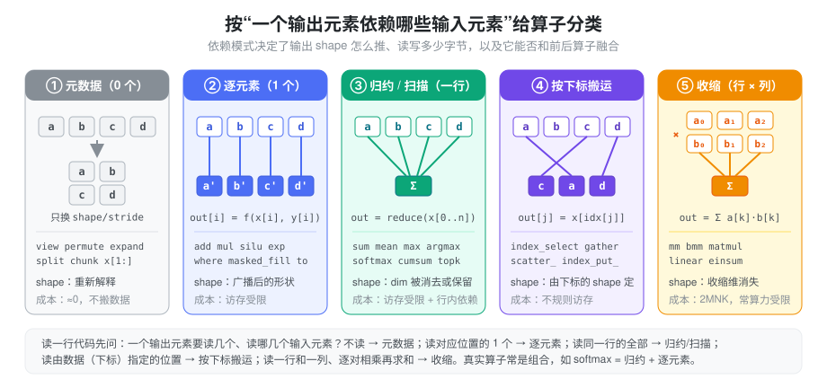
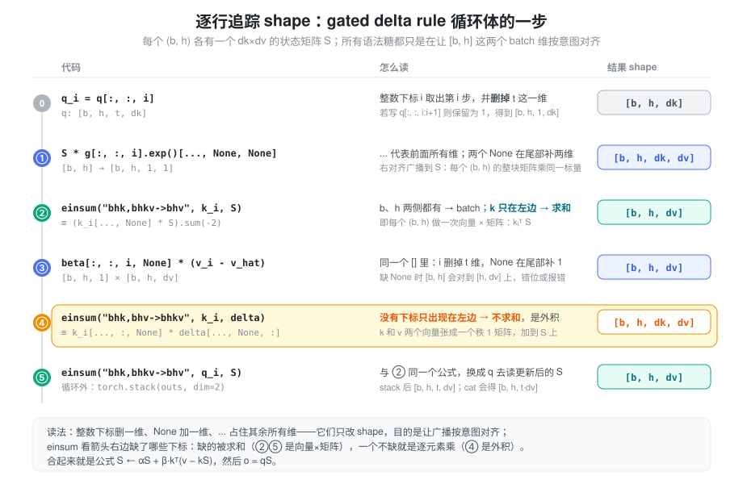
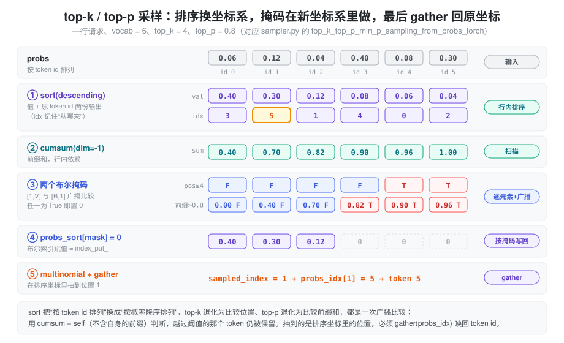

- 同样是一行 PyTorch，
x.view(...)几乎不花时间，x + bias要扫一遍显存，x @ w却能占满整块 GPU——差别从哪来？ x.sum(-1)之后再和x相除为什么报 shape 错误，加上keepdim=True就好了？torch.gather(x, 1, idx)的输出 shape 到底由谁决定？top-p 采样里排完序抽到的 index，为什么不是 token id？einsum("ti,taoi->tao", ...)这种下标串怎么读？哪些维度被求和了？g[:, :, i].exp()[..., None, None]、beta[:, :, i, None]这类写法，到底在做什么？
PyTorch 有上千个算子，逐个记 API 不现实。更有效的方式是先问一句：一个输出元素依赖哪些输入元素？ 这个依赖模式几乎决定了一个算子的全部工程属性——输出 shape 怎么推、读写多少字节、是访存受限还是算力受限、能不能和相邻算子融合。本篇先建立这套分类，再用 SGLang 里的 RMSNorm、采样、MoE 路由和 MLA 把它们落到真实代码。
张量的 storage/stride 模型见 Tensor Memory，广播与读写方向的细节见 Broadcast & Indexing。本篇关注的是更上一层：算子做了什么计算，以及这类计算的代价。
抽象：按依赖模式把算子分成五类

| 类别 | 一个输出依赖 | 输出 shape | 典型代价 |
|---|---|---|---|
| ① 元数据 | 不计算，复用原元素 | 重新解释 | 近乎为零，只改 shape/stride |
| ② 逐元素 | 对应位置的 1 个元素（广播后） | 广播后的形状 | 读一遍、写一遍，访存受限 |
| ③ 归约 / 扫描 | 某一维上的一整行 | 该维被消去、保留为 1 或不变 | 访存受限，且行内有依赖 |
| ④ 按下标搬运 | 由下标张量指定的位置 | 由下标的 shape 决定 | 不规则访存，常伴随复制 |
| ⑤ 收缩 | 一行与一列逐对相乘再求和 | 收缩维消失 | 2·M·N·K FLOPs，常算力受限 |
这套分类的用处在于：真实算子大多是它们的组合。softmax
是“归约（max、sum）+
逐元素（减、exp、除）”；F.linear 是“收缩 +
逐元素（bias）”；top-p 采样是“排序 + 扫描 + 逐元素 +
按下标写回 + gather”。拆开以后，每一步的 shape
和成本都能单独推。
它也解释了为什么推理优化总在谈“融合”：①不产生 kernel，⑤本身就算得很满，真正浪费带宽的是②③串成的长链——每一步都要把整个中间张量写回显存再读出来。RMSNorm、SiLU×Mul、RoPE 都是这种链，也都有对应的融合 kernel。
① 元数据算子：只换透镜
这一类不碰数据，只产生一组新的 shape/stride/offset。原理见 Tensor Memory，这里只整理常用的几组：
| API | 作用 | 是否复制 |
|---|---|---|
view(*shape) |
重新解释维度 | 从不；stride 不兼容时直接报错 |
reshape(*shape) |
同上 | 能 view 就 view，否则复制 |
flatten(s, e) |
合并 [s, e] 维 |
同 reshape |
permute / transpose /
.T |
交换维度 | 不复制，但结果通常非连续 |
unsqueeze / squeeze /
x[:, None] |
插入或去掉大小为 1 的维 | 不复制 |
expand |
把大小为 1 的维扩展 | 不复制，stride 为 0 |
split / chunk /
x[a:b] |
切出子区间 | 不复制 |
注意 view() 的条件不是“必须
contiguous”，而是“新 shape 能用现有 stride 表达”：fused QKV
split 出的 k 不连续，但
k.view(-1, KV, D)
依然成功。x[..., None] 与
x.unsqueeze(-1) 等价，...
代表其余所有维度。
元数据算子本身免费，代价会推迟到下游：一个
transpose 后的张量交给只接受连续输入的
kernel，那个 kernel 前面就会多出一次
contiguous() 复制。
② 逐元素算子：广播与类型提升
add、mul、exp、silu、where、masked_fill、.to(dtype)
都属于这一类：输出的第 i 个元素只依赖输入的第
i 个元素。两个输入 shape
不同时先广播——从最右一维开始对齐，每对维度相等或其中一个为
1，缺失的前导维视为 1：
x: (bs, seq, hidden)
bias: (hidden,) # 视为 (1, 1, hidden)
x + bias -> (bs, seq, hidden)逐元素算子的计算量很小，一次 x + bias
读两个输入、写一个输出，时间几乎完全花在访存上，因此多个逐元素算子连在一起，耗时约等于中间张量的读写次数之和。另外两个隐式行为需要留意：广播只做数字对齐、不检查语义（mask
的 batch 维可能对到 query 维）；混入一个 fp32
张量会把输出提升成 fp32。这两点详见 Broadcast &
Indexing。
③ 归约与扫描：dim 和 keepdim
归约沿某一维把一整行压成一个数：sum、mean、max、argmax、norm。参数
dim 指定被压掉的维度，keepdim=True
则把它保留为大小 1。以
x = torch.arange(12).view(3, 4) 为例：
| 表达式 | 输出 shape | 值 |
|---|---|---|
x.sum(0) |
(4,) |
[12, 15, 18, 21] |
x.sum(-1) |
(3,) |
[6, 22, 38] |
x.sum(-1, keepdim=True) |
(3, 1) |
[[6], [22], [38]] |
x.cumsum(-1) |
(3, 4) |
[[0, 1, 3, 6], [4, 9, 15, 22], ...] |
keepdim
的意义在于归约结果通常还要广播回原张量。x / x.sum(-1)
中，(3, 4) 与 (3,) 按右对齐会把 3
对到 4 上，报错；x / x.sum(-1, keepdim=True) 中
(3, 1)
沿最后一维广播，才是“每行除以自己的和”。归一化、softmax、RMSNorm
都是这个“归约 → keepdim → 广播回去”的模式。
扫描（cumsum、cumprod）不压缩维度，但第
j 个输出依赖同一行的前 j
个输入，因此同样有行内依赖。sort、topk
也归在这一类：它们需要看完一整行才能决定顺序，并且同时返回两份输出——值，以及这些值在原张量中的下标。下标是后面
gather 回原坐标的钥匙，采样一节会看到它的用法。
归约的另一个工程属性是精度：累加顺序会影响结果，低精度累加会丢失信息。sum(..., dtype=torch.float32)
可以只在累加时升精度，不必先把整个输入转成 fp32，见 Numerical
Precision。
④ 按下标搬运：gather、scatter 与 index
这一类的输出位置由数据决定：out[j] = x[idx[j]]。下标可以乱序、重复，无法用
stride 表达，所以读取总会复制。
index_select(x, dim, idx)/x[idx]：沿某一维按一维下标取整片，输出在该维的长度等于len(idx)。torch.gather(x, dim, idx)：逐元素取，输出 shape 等于idx的 shape。dim=1时out[i][j] = x[i][idx[i][j]]，即每一行各取各的。上例torch.gather(x, 1, [[3, 0], [1, 1], [2, 0]])得到[[3, 0], [5, 5], [10, 8]]。scatter_(dim, idx, src)：gather 的逆，self[i][idx[i][j]] = src[i][j]，原地写回；scatter_add_对重复下标累加。x[idx] = v/x[mask] = v：等号左侧的索引是index_put_，原地写回；右侧才是 gather 出副本。torch.cat/torch.stack：每个输入被搬到新输出的不同区段，也属于“搬运”，总要分配新存储。
gather/scatter 的成本主要是不规则访存：相邻输出可能来自相距很远的输入地址，难以合并访问。高性能 kernel 的常见做法是把下标表直接交给计算 kernel、在内部寻址，而不是先 gather 出完整张量。
⑤ 收缩：matmul、bmm 与 einsum
收缩是“两个张量沿某一维逐对相乘再求和”，这一维在输出中消失。它是推理里绝大部分 FLOPs 的来源，形状规则也最需要记清：
| API | 输入 shape | 规则 |
|---|---|---|
torch.mm(a, b) |
[M, K] × [K, N] |
严格二维 |
torch.bmm(a, b) |
[B, M, K] × [B, K, N] |
严格三维，batch 维必须相等 |
a @ b / torch.matmul |
任意维 | 最后两维做矩阵乘，前面的 batch 维按广播规则对齐；一维输入会被临时补维 |
F.linear(x, w, b) |
[..., K]、w: [N, K] |
计算 x @ w.T + b，权重按
[out, in] 存 |
torch.einsum(eq, ...) |
任意 | 用下标串描述，见下 |
einsum
的读法只有一条规则：出现在箭头右边的下标保留，只出现在左边的下标被求和。例如
"bshd,bthd->bhst" 中
b、h 两侧都有，是 batch
维；s、t 分别来自 q 和
k，保留下来成为 score 矩阵；d
只在左边，被收缩——这正是 q @ k.T 按 head
分组的写法。
收缩的计算量是 2·M·N·K，数据量是
M·K + K·N + M·N，当 M 很小（decode
时 token 数少）时它会从算力受限退化为访存受限，见 Gemm 计算量 和 Roofline。另外，转置一般不需要物化：w.T
只是 stride 互换的 view，cuBLAS
通过“转置”标志直接读取，这也是 F.linear
能把权重按 [out, in]
存放而不付复制代价的原因。
语法糖：只改 shape 的那些写法
参考实现和模型代码里最让人“一头雾水”的，往往不是算子本身，而是夹在算子之间、只为了让
shape 对齐的写法。它们几乎都属于 ①
元数据类，不搬数据，目的只有一个：让下一步的广播或收缩按意图对齐维度。设
x: [b, h, t, d]：
| 写法 | 结果 shape | 含义 |
|---|---|---|
x[:, :, i] |
[b, h, d] |
整数下标：取第 i
个，并删掉这一维 |
x[:, :, i:i+1] |
[b, h, 1, d] |
切片：取一段，保留这一维（长度 1） |
x[:, :, -1] |
[b, h, d] |
负下标从末尾数，-1 是最后一个 |
x[..., 0] |
[b, h, t] |
... 占住前面所有维，等价于
x[:, :, :, 0] |
x[..., None] |
[b, h, t, d, 1] |
None 在该位置插入一个长度 1 的维，等价
unsqueeze(-1) |
x[:, :, i, None] |
[b, h, 1] |
同一个 [] 里从左到右处理：i
删掉 t 维，None 在末尾补 1 |
x[..., ::2] |
[b, h, t, d/2] |
步长切片，stride 翻倍，仍是 view |
x[:, :, [0, 2]] |
[b, h, 2, d] |
列表/张量下标是高级索引，会复制（④ 类） |
几条容易混的规则：
- 整数删维，切片留维。
x[:, :, i]与x[:, :, i:i+1]取的是同一批数据，但前者少一维。后续要和保留了 t 维的张量广播时，用错一种就会错位。 ...只能出现一次，它替代“足够多的:”，让同一行代码对任意前导维都成立。x[..., :d]、x[..., d:]（SiLU×Mul 的切半）就是靠它不关心前面有几维。None是为了广播而补的 1。 一个[b, h]的标量门要乘到[b, h, dk, dv]的矩阵上，必须先变成[b, h, 1, 1]——广播从右对齐，不补的话[b, h]会对到[dk, dv]上。- einsum 不求和时就是带广播的逐元素乘。
"bhk,bhv->bhkv"右边一个下标都没少，所以没有收缩，等价于k[..., :, None] * v[..., None, :]，即外积。 stack新建维，cat拼已有维。 t 个[b, h, dv]用stack(dim=2)得到[b, h, t, dv]；用cat(dim=2)得到[b, h, t·dv]。
另有几处与 shape
无关、但读代码常遇到的小写法：b, h, t, dk = k.shape
是把 torch.Size（一个
tuple）解包成整数；x.shape[:-1] + (d,) 是 tuple
拼接，构造“除最后一维外不变”的新
shape；k.new_zeros(...) /
x.new_empty(...) 创建与 k
同 dtype、同 device 的新张量，省去手写
dtype=, device=；F.normalize(x, dim=-1)
是沿最后一维做 L2
归一化（x / ‖x‖₂）；dk ** -0.5 是
Python 标量运算
1/√dk，与张量相乘时不会改变张量的 dtype。
例子：逐行读 gated delta rule 参考实现
Linear Attention
里的 gated_delta_rule_ref
是上面这些语法糖的集中体现。先把数学写在旁边——每个
(b, h) 有一个 dk × dv 的状态矩阵
S，每一步：
S ← α·S α = exp(g)，标量衰减
v̂ = kᵀS 用当前记忆“预测” k 对应的 v
Δ = β·(v − v̂) 预测误差
S ← S + k ⊗ Δ 沿 k 方向写回误差（外积）
o = qᵀS 用 q 读出代码里所有的下标、None、einsum，都只是在给这几行公式补上
[b, h] 两个 batch 维：
for i in range(t):
q_i, k_i, v_i = q[:, :, i], k[:, :, i], v[:, :, i] # [b,h,dk] / [b,h,dv]，删掉 t 维
S = S * g[:, :, i].exp()[..., None, None] # [b,h] -> [b,h,1,1]，广播到 [b,h,dk,dv]
v_hat = torch.einsum("bhk,bhkv->bhv", k_i, S) # 收缩 k：向量 × 矩阵 -> [b,h,dv]
delta = beta[:, :, i, None] * (v_i - v_hat) # [b,h,1] × [b,h,dv] -> [b,h,dv]
S = S + torch.einsum("bhk,bhv->bhkv", k_i, delta) # 不收缩：外积 -> [b,h,dk,dv]
outs.append(torch.einsum("bhk,bhkv->bhv", q_i, S)) # 同 ②，-> [b,h,dv]
return torch.stack(outs, dim=2), S # t 个 [b,h,dv] -> [b,h,t,dv]
逐行看：
- 取第 i 步：
q[:, :, i]用整数下标删掉 t 维，于是q_i、k_i是[b, h, dk]，v_i是[b, h, dv]——每个(b, h)一个向量。 - ① 衰减：
g[:, :, i]是[b, h]，.exp()是逐元素；[..., None, None]在末尾补两个 1 变成[b, h, 1, 1]，右对齐广播到S的[b, h, dk, dv]，即“每个 head 的整个矩阵乘同一个标量”。KDA 的门是逐通道向量[b, h, dk]，只需补一个None变成[b, h, dk, 1]，就变成按行衰减。 - ② 预测：
"bhk,bhkv->bhv"中k只出现在左边，被求和；等价写法是(k_i[..., None] * S).sum(-2)或(k_i.unsqueeze(-2) @ S).squeeze(-2)。 - ③
误差：
beta[:, :, i, None]先删 t 维再补 1，得到[b, h, 1]，与[b, h, dv]广播；漏掉None的话[b, h]会去对齐[h, dv]，不是报错就是悄悄错位。 - ④ 写回：
"bhk,bhv->bhkv"右边一个下标都没少，没有求和，是外积k_i[..., :, None] * delta[..., None, :]，得到一个秩 1 的[dk, dv]矩阵加到S上。 - ⑤ 读出与收集：和 ② 同一个公式，用
q_i读更新后的S；循环结束后stack(dim=2)在第 2 维新建 t 维，与输入v: [b, h, t, dv]对齐。
两点工程细节也藏在这几行里。第一，S = S * ...、S = S + ...
都是换绑名字，不是原地写：调用方传进来的初始
S 不会被修改，函数返回新的终态。SGLang 的
decode kernel 则相反，直接原地改写 state pool
里的状态。第二，这个 for
循环无法向量化掉，因为第 i 步的 S
依赖第 i-1 步；eager 下每一步要发射七八个小
kernel，并且每步都把整个 [b, h, dk, dv]
状态读写好几遍。这正是 prefill 用 chunkwise 算法、decode 用
fused recurrent kernel 的原因，见 Linear
Attention。参考实现的价值在于语义清楚，适合做 kernel
的对照，而不是用来跑。
遇到类似的代码，可以先在小 shape 上把每一行的
.shape 打印出来，再对照公式确认：哪一维是
batch、哪一维被求和、哪一处 None
是为了广播。
RMSNorm 与 SiLU×Mul
layers/layernorm.py 的
RMSNorm.forward_native() 是“归约 → keepdim →
广播回去”的标准写法（省略 residual 等分支）：
x = x.to(torch.float32)
variance = x.pow(2).mean(dim=-1, keepdim=True) # ② + ③，[T, 1]
x = x * torch.rsqrt(variance + self.variance_epsilon) # ②，[T, 1] 广播到 [T, H]
x = (x * self.weight).to(orig_dtype) # ②，weight [H] 广播按分类拆开，它只有一次归约，其余全是逐元素；但在 eager
模式下每一步都会把一个 [T, H]
的中间张量写回显存——fp32
转换、平方、相乘、乘权重、转回，加上 residual
分支还有两次加法。forward_cuda() 在 CUDA 上调用
rmsnorm / fused_add_rmsnorm
kernel，把整条链放进一个 kernel：每行读一次
x（和
residual），在寄存器里完成归约和缩放，写一次输出。计算量没变，访存从近十遍降到一两遍。
layers/activation.py 的
SiluAndMul
是另一条短链：forward_native() 写成
F.silu(x[..., :d]) * x[..., d:]——两次切片是
①，silu 和乘法是 ②，中间产生一个
silu 结果张量；forward_cuda() 先
torch.empty 出 [..., d]
的输出，再由 silu_and_mul(x, out)
一次完成。两者的区别不在于算法，而在于中间张量有没有落到显存。
top-k / top-p 采样——排序换坐标
采样把几乎所有类别都用了一遍。layers/sampler.py
中 Sampler.forward() 的前半段：
logits.div_(sampling_info.temperatures)：temperatures在SamplingBatchInfo里被.view(-1, 1)成[B, 1]，沿 vocab 维广播，每个请求除以自己的温度；原地写，不分配新的[B, V]。logits[:] = torch.softmax(logits, dim=-1)：softmax 本身要分配输出，但结果被拷回logits的原存储并复用为probs（源码注释 “In-place op to save memory”），避免同时持有两份[B, V]。
默认的 flashinfer 后端把 top-k/top-p
交给融合 kernel；pytorch 后端走
top_k_top_p_min_p_sampling_from_probs_torch()，正好可以逐步看清每一类算子在做什么：

probs_sort, probs_idx = probs.sort(dim=-1, descending=True)
probs_sum = torch.cumsum(probs_sort, dim=-1)
probs_sort[torch.arange(V).view(1, -1) >= top_ks.view(-1, 1)] = 0.0
probs_sort[(probs_sum - probs_sort) > top_ps.view(-1, 1)] = 0.0
sampled_index = torch.multinomial(probs_sort, num_samples=1)
batch_next_token_ids = torch.gather(probs_idx, dim=1, index=sampled_index)关键一步是 sort：它把“按 token id
排列”换成“按概率降序排列”的坐标系，在新坐标系里 top-k
变成“位置 ≥ k”，top-p 变成“不含自身的前缀和 >
p”，都只是一次 [1, V] 或 [B, V] 与
[B, 1] 的广播比较，每个请求可以有不同的 k 和
p。用 probs_sum - probs_sort 而不是
probs_sum 判断，保证第一个越过阈值的 token
仍被保留。multinomial 不要求概率归一化，所以置
0 之后不必重新除和。
最后 multinomial
返回的是排序坐标里的位置，必须用
sort 返回的 probs_idx 做一次
gather 才能得到 token id——忘掉这一步就会采到“第 1
名”而不是“token 5”。同文件的
top_p_normalize_probs_torch()
走的是反方向：在排序坐标里处理完，再
scatter_(-1, probs_idx, probs_sort) 把概率写回
token id 坐标。sort/gather 与 scatter
互为逆操作，这是“换坐标 → 处理 →
换回”模式的两种收尾方式。
这条路径的代价也一目了然：对 [B, V]
做一次完整排序（V
常为十几万），再加数个同规模的中间张量和布尔掩码，这正是它被标为
“slower fallback” 的原因。
MoE 路由——topk、scatter 与 masked_fill
layers/moe/topk.py 的
grouped_topk_gpu()（DeepSeek
风格的分组路由）先选专家组、再在组内选专家，全程用的是归约和按下标写入：
group_scores = scores.view(num_token, num_expert_group, -1).max(dim=-1).values # ① + ③
group_idx = torch.topk(group_scores, k=topk_group, dim=-1, sorted=False)[1] # ③
group_mask = torch.zeros_like(group_scores)
group_mask.scatter_(1, group_idx, 1) # ④
score_mask = group_mask.unsqueeze(-1).expand(...).reshape(num_token, -1) # ①
tmp_scores = scores.masked_fill(~score_mask.bool(), 0.0) # ②
topk_weights, topk_ids = torch.topk(tmp_scores, k=topk, dim=-1, ...) # ③几个值得注意的写法：view 把
[n, e] 拆成
[n, group, e/group]，使“每组的最高分”变成最后一维上的普通
max；scatter_
把“选中了哪几组”的下标表转成 0/1
掩码，下标形式和掩码形式之间的转换在路由、采样里反复出现；expand(...).reshape(...)
把组级掩码展开回专家级——expand 是零 stride
view，但随后的 reshape 无法合并零 stride
维度，会在这里物化一份
[n, e]。renormalize 分支里的
topk_weights.sum(dim=-1, keepdim=True, dtype=torch.float32)
则是归约时只升累加精度、再广播回去相除。
收缩的两种写法
layers/moe/fused_moe_native.py 的
fused_moe_forward_native()（unquant.py
只在 torch.compile 且 batch size 为 1 时启用它）用 einsum
表达专家计算：
w13_weights = layer.w13_weight[topk_ids] # ④ gather：[t, a, 2·o, i]
x1 = torch.einsum("ti,taoi -> tao", x, w1_weights) # ⑤ 收缩 i
expert_outs = torch.einsum("tao, taio -> tai", (x1 * x3), w2_weights) # ⑤ 收缩 o
expert_outs = torch.einsum("tai,ta -> ti", expert_outs, topk_weights) # ⑤ 收缩 a（加权求和）下标 t 是 token、a
是被选中的第几个专家、i/o 是
hidden 与中间维。读法按“右边没有的下标被求和”：第一式收缩
i，第三式收缩
a，后者正是“按路由权重把 top-k
个专家的输出加起来”。这种写法简洁，但第一行按
topk_ids gather 出了每个 token
专属的一份专家权重，只在 token 数为 1
时才划算——这也是它只用于 bs=1 的原因。
models/deepseek_common/attention_forward_methods/forward_mla.py
中 MLA 的权重吸收则是 bmm 的典型用法：
q_nope_out = torch.bmm(q_nope.transpose(0, 1), self.w_kc) # [H, T, d] × [H, d, r] -> [H, T, r]
q_nope_out = q_nope_out.transpose(0, 1) # 回到 [T, H, r]bmm 要求 batch 维在最前，所以先用
transpose 把 head 维挪到第 0 维——这是 ① 类的
view，不复制，bmm 直接按 stride 读取。每个 head
一个独立的矩阵乘，正好对应“每个 head 有自己的
W_UK”。加载权重时
deepseek_weight_loader.py 里的
w_kc.transpose(1, 2).contiguous().transpose(1, 2)
则是反过来的技巧：shape 仍是
[H, d, r]，但后两维的 stride 从
(r, 1) 变成
(1, d)，即改成列优先存放（源码未注释具体原因，通常是为了匹配下游
bmm kernel 偏好的布局）。shape 相同的两个张量，stride
不同，对 kernel 而言就是两种不同的输入。
读代码时的检查顺序
- 把每一行算子归到五类之一，组合算子拆成几步。
- 对归约，确认
dim和keepdim，以及结果要不要广播回去。 - 对 gather/scatter/topk/sort，确认当前处于哪个坐标系（原始 id 还是排序后位置），最后有没有映射回去。
- 对 einsum/matmul，写出每个下标的含义，找出被求和的维度；箭头右边一个不少就是外积/逐元素乘。
- 对整数下标、
None、...，写出每一行之后的 shape，确认广播对齐的是想要的维度。 - 数一数②③链上有多少个落到显存的中间张量——这就是融合能省下的部分。
小结
算子的本质区别在于“一个输出元素依赖哪些输入元素”：不依赖（元数据）、依赖一个（逐元素）、依赖一整行（归约/扫描）、依赖数据指定的位置（按下标搬运）、依赖一行与一列（收缩）。这五种模式分别对应零成本、访存受限、带行内依赖的访存受限、不规则访存和算力受限，也分别对应
shape 的五种推导方式。RMSNorm
是②③串成的链，所以要融合；采样用 sort
换坐标、在新坐标里做广播比较、再 gather 回 token id；MoE
路由在下标和掩码之间来回转换；MLA 用 transpose + bmm 把“每个
head 一个矩阵”表达成一次批量收缩；gated delta rule
里的整数下标、None 和 einsum 则都只是给公式补上
batch
维、让广播按意图对齐。读懂依赖模式，就能在不查文档的情况下推出
shape、估出成本，并看出哪里值得写一个融合 kernel。